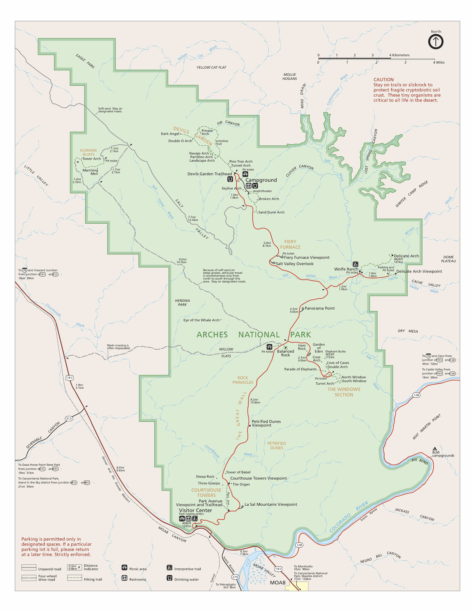

More Information


Arches National Park
ARCHES NATIONAL PARK
The pride of Utah
Arches National Park is a national park in eastern Utah, United States. The park is adjacent to the Colorado River, 4 mi (6 km) north of Moab, Utah. More than 2,000 natural sandstone arches are located in the park, including the well-known Delicate Arch, as well as a variety of unique geological resources and formations. The park contains the highest density of natural arches in the world.
The park consists of 310.31 km2 (76,680 acres; 119.81 sq mi; 31,031 ha) of high desert located on the Colorado Plateau. The highest elevation in the park is 5,653 ft (1,723 m) at Elephant Butte, and the lowest elevation is 4,085 ft (1,245 m) at the visitor center. The park receives an average of less than 10 in (250 mm) of rain annually.
Administered by the National Park Service, the area was originally named a national monument on April 12, 1929, and was redesignated as a national park on November 12, 1971. The park received more than 1.8 million visitors in 2021. From April 1 through October 31, 2023, a timed entry reservation is required to visit the park between the hours of 7 a.m. and 4 p.m